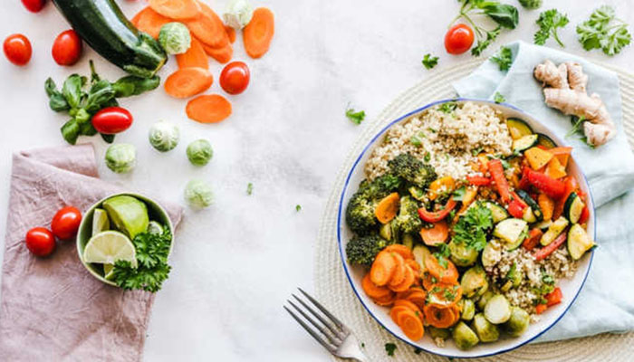

SUSTENTABILIADE
Planejar refeições é o segredo da economia doméstica sustentável
Publicado em 26/12/2018

Você já sabe o que vai comer no almoço de daqui a 30 dias? Pois saiba que esse tipo de previsão ajuda a ter uma economia doméstica muito mais sustentável. Pergunte, por exemplo, a Kristin D., dona de casa de Ontario, no Canadá. Ela dá uma verdadeira aula de planejamento familiar ao mapear todas as refeições de até um mês adiante.
O marido, Dave, trabalha fora em tempo integral. Kristin se dedica a trabalhos de voluntariado por meio período.
O casal tem três filhos, Hunter, de 10 anos, Annabelle, de 8, e Kathryn, de 6. Com tanta gente pra comer, a racionalização dos cardápios e das idas ao supermercado é imperativa contra desperdícios de tempo, dinheiro e ingredientes.
Em primeiro lugar, o planejamento das refeições é importante para a programação das compras de mantimentos. Kristin conta que vai ao supermercado para o “grosso” do abastecimento uma vez por mês. Eventualmente, adquire a cada semana alguns perecíveis.
Refeições dobradas
As porções de carne, por sinal, são restritas: a família consome um mínimo de duas refeições veganas ou vegetarianas por semana. Isso ajuda tanto a tornar a alimentação mais saudável como a aliviar o orçamento doméstico.
Outro dos truques de Kristin é dobrar as refeições. Eventuais sobras ainda são consumidas nos finais de semana.
Além disso, a cada dois meses, ela passa várias horas cozinhando “lotes” que armazena no freezer e dão para 15 ou 20 refeições. E também faz uma panela de sopa nos finais de semana para ser degustada ao longo dos dias como uma espécie de “coringa” do cardápio.
O plano de menu também ajuda a não comer fora e a evitar deliveries, que acabam estourando os gastos. Isso porque não é necessário “pensar no que cozinhar”, diz Kristin, uma vez que tudo já é predefinido. A família sai para comer geralmente uma ou duas vezes por mês.
Algumas regrinhas de logística mantêm o mecanismo bem azeitado. Quem chega do trabalho primeiro, por exemplo, já começa a cozinhar. Aos poucos, os filhos são incluídos nesse revezamento.
Clique aqui e conheça o projeto As Melhores Soluções Sustentáveis.
Kristin afirma que adora cozinhar, o que é bastante útil nesse processo de economia doméstica. Ela demora entre meia e uma hora, em média, no preparo de uma refeição.
Por semana, a família gasta o equivalente a R$ 579 com alimentação, excetuando as refeições feitas fora de casa.
Fonte: believe.earth
Foto: Divulgação/ Negozio Leggero